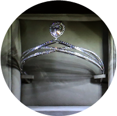
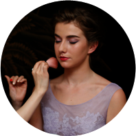
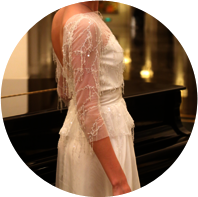
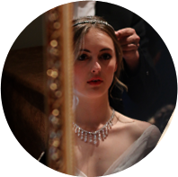
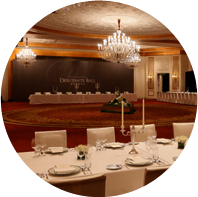

2015年1月10日，国际大都会上海外滩，第四届"上海国际元媛舞会"隆重举行，十二位名门千金正式宣告进入高级社交圈，来自英国的Fabienne Peters当选"年度元媛"，新时代的公主由此荣耀诞生。策划/编辑：李惠 设计：虞健 制作：马帅
-
首位上海元媛
Polly Zhang，出生于显赫的老式上海家族，是史上首位上海元媛。 -
姊妹共同参加
Gloria Dai Stefano是第三届上海国际元媛Giulia di Stefano的妹妹。 -
伦敦社交季大使
Katy Reece，London Season伦敦社交季（英国最高级别元媛舞会）大使。
-


CHAUMET
在舞会举办半年至一年前，便会有一些出身豪门的千金在父母的陪伴下定制钻冕。
-

娇兰
专业彩妆师团队为元媛们精心雕琢舞会妆容，焕发只属于她们的卓越气质。
-

Tina Couture
元媛们将继续身着时尚圈内享有盛誉的独立设计师Tina设计的晚礼服优雅亮相。
-

George
George 和他的团队，第四次为舞会的元媛们设计一系列合适戴上冠冕的发型。
-

上海半岛酒店
上海半岛酒店坐落于上海地标外滩，完美重现了申城在二十世纪二、三十年代的风貌。
克利翁名门少女成年舞会
每年定于11月在巴黎克利翁酒店举行，这是巴黎最古老奢侈的酒店之一。它的前身为"名门千金成年舞会"。最初只在英国宫廷内部举办。夏洛克女皇舞会
英国的"夏洛克女皇舞会"是专门为伦敦上流社会的年轻女子而设，只有那些出生高贵、气质出众，且年龄在17岁到20岁之间的女子才有资格获得邀请。上海国际元媛舞会
上海国际元媛舞会源自于西方的元媛舞会，是一种欧洲贵族阶层的传统仪式。2012年京剧麒派艺术创始人周信芳的女儿周采茨首次将其引进中国。万宝宝
珠宝设计师 亲临克利翁名门少女成年舞会
我通常很少参加舞会，对我而言过于严肃庄重。最近参加了几个外国朋友的婚礼，女士需穿着落地晚礼裙，男士需穿着正装系领结。在社交礼仪中，着装配饰是十分重要的，他不但可以体现出你的仪表形态，还能从细微之处体现个人品味，一个纽扣的形状，一条丝巾的颜色，都要用心选择，听起来非常繁缛复杂，但这也是参加舞会的人们从中享受的乐趣之一。作为珠宝设计师，由于职业原因，我尤为注重人们所佩戴的各式珠宝。 阅读更多>>
郑小丹
服装设计师、亲临英国夏洛克女皇舞会
2009年，在一位德高望重的老贵族的召集下，王后夏洛特名媛成年社交舞会重新在英国相对隐秘的上流社会拉开帷幕。英国夏洛特女王舞会可谓是现代成人舞会的源头，许多别国的名媛舞会例如巴黎克利翁成人礼舞会都是效仿英国夏洛特女王舞会，也会邀请英国的名媛贵族来参加增添气氛及品质。国内的名媛舞会相对来说范围更广，由于政治原因，中国的"贵族"也被社会精英所替代，在血统上似乎就已经略输一筹。 阅读更多>>
郝汉祯
台北市长女儿，第一届元媛舞会年度元媛
舞会的交流是面对面的，是不可取代的，电子的交流方式让我们更好的维系感情，与其他的舞会比起来，我们是很新的，不一样的地方是它们有各自的传统，现在电子的时代，这种交流模式反而让元媛们变得更近，我们随时可以打电话，随时都可以一起做事情，我们都可以联络然后在一起。以舞会的形式，大家每年还都是要聚一次的，像很多之前的元媛，我们也都还是会邀请回来到每一年的舞会当中，只要你来参加过，那你永远是受欢迎的。 阅读更多>>
- 品牌包装出的芭比娃娃
查小欣
香港著名传媒人，主持人，专栏作家
中国的元媛舞会全由品牌赞助，名媛就如一个会走路的芭比娃娃，由大会包装造型，欠缺发挥个人品味和性格的空间，跟一般舞会沒太大分别, 只是经过名师精心包装，由赞助商打造出来。
阅读更多>> -
被公关化的舞会
Yvonne奕方
精品业并购总监，时装美容lifestyle专栏作家
现在的元媛舞会，比较公关化。在巴黎Crillon Hotel举办的 "社交名媛成人舞会" 自1991年由巴黎时尚界公关名人Ophelie Renouard恢复，也为产业内的一些品牌和名女人们搭建了桥梁。
阅读更多>> -
电子社交更便捷
麻宁
专栏作家、主持人
最近对一句表达朋友交往的观点感触很深："不要硬拽着你的朋友共同上路，而是在同路人中寻找合适的朋友。"爱好投契、有共同语言的朋友更频繁地进行社交互动是很自然的事情。
阅读更多>> -
华丽地去钓金龟婿
Vincent Ku
杂志专栏作家
舞会整件事骨子里的目的其实就是找适合婚配的相同阶级男子，贵族的存在其中一个方法与目的， 就是繁衍后代， débutante ball这个场合， 只不过是把整件钓金龟的事情包装得华丽而已。
阅读更多>> -
莫变炫富Party
 鲁国平
鲁国平
专栏作家，媒体人
西方一些元媛舞会更加多地转向成为一种公益慈善活动。这点，中国的元媛舞会就要注意了！不要变相成为炫富的高级part，小心触发社会贫富差距过大的大众阶层矛盾情绪。
阅读更多>> -
大陆已经没有名媛
王海
资深媒体人，专栏码字匠
1949年后大陆就没有真正的名媛了。如果非要说有，得是加引号的名媛。名媛是那些姿态优雅生活优渥、喜欢参与社会公益事务的有闲小姐太太，出身名门，绝非new money。
阅读更多>>